Starter
Tyrande
Accurate Mark
Gain Trueshot Aura, Mark of Mending, Huntress's Fury, and Ranger's Mark.
Increases Hunter's Mark duration by 4 seconds.
◆Repeatable Quest: Basic Attacks against enemy Heroes increases Attack Damage by 0.33.
Retain 50% of Quest progress after winning the game.

Starter
All Talents
Gain all talents in a tier whenever you reach a non-Heroic talent tier.

Starter
Nazeebo
Arachnophile
Summons 3 Corpse Spider every 5 seconds.
Gain Widowmakers, Hexed Crawlers, Spirit of Arachyr, and Spider Colony.
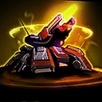
Starter
Sgt. Hammer
Artillery
Gain Advanced Artillery, increase its splash radius bonus to 50% and splash damage to 75% of Basic Attack damage.
Basic Attacks while in Siege Mode have global range.
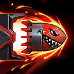
Starter
Sgt. Hammer
Big Guns
Gain Blunt Force Gun and Orbital BFG.
Increases Blunt Force Gun's maximum charges by 2, reduces its cooldown by 60 seconds, and removes its Mana cost.

Starter
Illidan
Burning Blades
Gain Fiery Brand.
Basic Attacks increase Attack Speed by 0.5%, up to 800%. After 2.25 seconds, Burning Blades rapidly decays.
Dealing damage with Dive or Sweeping Strike grants 1 stack of Burning Blades.

Starter
The Lost Vikings
Button Masher
Gain Viking Bribery, Spin To Win!, Norse Force, and Jump!.
Reduces Spin To Win!, Norse Force, Jump!, and Go Go Go! cooldowns by 50%.
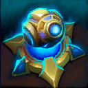
Starter
Probius
Cannon Rush
Photon Cannon gains 2 additional charges and its cooldown replenishes all charges at the same time.
Photon Cannon's duration is paused while within a Pylon's Power Field.

Starter
Illidan
Deep Dive
Gain Reflexive Block, Rapid Chase, Friend or Foe, and Marked for Death.
Dive gains unlimited range and deals bonus damage to Heroes equal to 5% of their maximum Health.

Starter
Tyrande
Elune's Ranger
Gain Ranger, Harsh Moonlight, Empower, and Commander of Sentinels.
Increases Sentinel's maximum charges by 1 and removes its Mana cost.
◆Repeatable Quest: Hitting enemy Heroes with Sentinel increases its damage by 5%.
Reward: After hitting 20 Heroes, Sentinel pierces the first Hero hit.
Retain 25% of Quest progress after winning the game.

Starter
Thrall
Frostwolf's Fury
Gain Frostwolf Pack, Ancestral Wrath, Frostwolf's Grace, and Spirit Shield.
Basic Attacks grant 1 stack of Frostwolf Resilience.

Starter
The Lost Vikings
Great Viking Hoard
Enemy Heroes drop 3 Regeneration Globes and enemy Structures drop 1 Regeneration Globe on death. These globes do not turn Neutral.
◆Quest: Viking Hoard grants 0.5% Attack Damage, Spell Power, maximum Health, and 0.25% Movement Speed per Regeneration Globe.
Grants 0.75% Movement Speed to Go Go Go! per Regeneration Globe.
Retain 25% of Viking Hoard's Quest progress after winning the game.

Starter
Muradin
Hammerer
Gain Perfect Storm and Sledgehammer.
Storm Bolt deals bonus damage to enemy Heroes equal to 7% of their maximum Health.
Retain Storm Bolt's Quest progress after winning the game.

Starter
Thrall
Lightning Rod
Gain Nexus Blades, Elemental Assault, and Elemental Momentum.
Thrall's Basic Attack becomes ranged and ranged-only Boons become available.
Increases Feral Spirit and Chain Lightning's range by 50%.
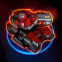
Starter
Sgt. Hammer
Machine Gunner
Basic Attacks while in Tank Mode have their cooldown reduced to 0.125 seconds, deal 25% damage, and have 1.5 increased Attack Range.

Starter
Tyrande
Meteor Shower
Gain Elune's Gift.
Every Basic Attack fires a Lunar Flare at a random nearby enemy, prioritizing Heroes. This effect has a 3.5 second cooldown.
Retain Lunar Flare's Quest progress after winning the game.

Starter
Li-Ming
Missile Barrage
Gain Force Armor, Charged Blast, Seeker, Fireflies, and Mirrorball.
After the initial missiles, Magic Missiles fires a barage of 15 magic missiles over 1 second dealing 50% damage, but its cooldown is increased to 5 seconds.
The additional magic missiles deal 25% damage to Structures and do not benefit from Seeker.

Starter
Muradin
MuradinJumper
Gain Dwarf Block, Heavy Impact, Dwarf Launch, and Mountain King.
Increases Dwarf Toss's range and radius by 100% and become Unstoppable during the jump.
◆Repeatable Quest: Hitting enemy Heroes with Dwarf Toss increases its damage by 10%.
Reward: After hitting 25 Heroes, reduce Dwarf Toss's cooldown by 4 seconds.
Retain 50% of Quest progress after winning the game.

Starter
Li-Ming
Orbing
Gain Triumvirate, Zei's Vengeance, and Arcane Orbit.
Arcane Orb fires 2 additional orbs in an arc.

Starter
Overwhelming Power
Increases Attack Speed, Movement Speed, Spell Power, and all damage dealt by 20%.
Basic Abilities recharge 50% faster.
Heal for 10% of damage dealt.

Starter
Nazeebo
Power Ritual
Basic Attacks deal bonus damage equal to your Voodoo Ritual stacks and splash for 50.0% damage.

Starter
Thrall
Quests Galore
Gain Echo of the Elements, Crash Lightning, Maelstrom Weapon, Frostwolf Pack, and Thunderstorm.
Retain 50% of Quest progress on these Quests after winning the game.

Starter
Self Reliant
AI teammates gain 25 permanent Armor and 300% increased Health and Mana regeneration.
AI teammates heal for 33% of their damage dealt.

Starter
The Lost Vikings
Specialized Vikings
Olaf gains Large and In Charge, 40 permanent Armor, and reduces Olaf's Charge cooldown by 25%.
Increases Baleog's Attack Speed by 40%.
Increases Erik's Attack Range by 5.5.

Starter
Li-Ming
Teleporter
Gain Aether Walker, Calamity, Illusionist, and Diamond Skin. Calamity deals 50% damage to non-Heroes.
Increases Teleport's range by 100% and maximum charges by 2.

Starter
Illidan
True Unending Hatred
Gain Nexus Blades and Unending Hatred. Increases Unending Hatred's Quest stacks obtained from all sources by 25%.
Retain 50% of Quest progress after winning the game.

Starter
Muradin
Unstoppable Avatar
Gain Avatar, Unstoppable Force, Third Wind, and Stoneform.
Avatar is always active.
Basic Attacks deal bonus damage equal to 3% of your current Health.

Starter
Probius
Warp Split
Warp Rift splits into 2 Warp Rifts after detonation. These do not split further.
Enemies are pulled toward Warp Rift's center.
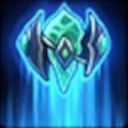
Starter
Probius
Warp Technology
Gain the ability to warp in Zealots for 5 Minerals, Stalkers for 10 Minerals, and Immortals for 30 Minerals near Pylons.

Starter
Nazeebo
Zombie Handler
When a nearby enemy Minion dies, it has a 50% chance to summon a Zombie.
Zombies no longer lose Health over time.
Gain Dead Rush and Ring of Poison.
Cryo Mine
Increases Spider Mines's Slow duration by 2.5 seconds.

Common
Nazeebo
Deadly Toads
Increases Plague of Toads's damage by 20% (+20% per stack).
Common
Nazeebo
Debilitating Spiders
Increases Corpse Spiders's Slow by 15% and Slow duration by 2 seconds.

Common
Destruction
◆Quest: Destroy enemy Forts or Keeps.
Reward: After destroying 6 Forts and Keeps, gain 1 Common Boon.
Reward: After destroying 12 Forts and Keeps, gain 1 Uncommon Boon.
Reward: After destroying 24 Forts and Keeps, gain 1 Rare Boon.
Retain Quest progress after winning the game.
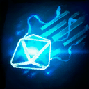
Common
Probius
Disruptor
Increases Disruption Pulse's damage by 20% (+20% per stack).
Common
Nazeebo
Efficient Spiders
Reduces Corpse Spiders's Mana cost by 30.

Common
Muradin
Electrocution
Increases Thunder Clap's Slow by 20%.

Common
Tyrande
Elune's Reach
Increases Light of Elune's range by 50% and it heals for 25% more on distant targets.

Common
Endurance
Increases maximum Health of ALL allies by 8% (+8% per stack).
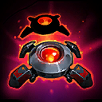
Common
Sgt. Hammer
Explosive Mine
Increases Spider Mines's damage by 20% (+20% per stack) and its duration by 5 (+5s per stack) seconds.
Common
Probius
Explosive Rift
Increases Warp Rift's damage by 20% (+20% per stack).

Common
Fast Feet
Increases Movement Speed of ALL allies by 6% (+6% per stack).
Common
Nazeebo
Fast Uproot
Reduces the initial delay and cast time of Zombie Wall by 50%.
Firepower
Increases Photon Cannon's damage by 20% (+20% per stack).
Common
Nazeebo
Fodder
Reduces Zombie Wall's Mana cost by 50.
Globe Collector
Increases the collection range of Regeneration Globes for ALL allies by 3 (+3 per stack).
Common
Nazeebo
Hungry Zombies
Increases damage dealt of Zombies by 20% (+20% per stack).

Common
Thrall
In a Rush
Increases Windfury's Movement Speed bonus by 10% (+10% per stack) and its duration by 0.5 (+0.5s per stack) seconds.

Common
Kill Contract
◆Quest: Get 25 Hero Takedowns. Progress is lost between rounds.
Reward: Gain 1 Common Boon and 1 Uncommon Boon.
Common
Probius
Lasting Rift
Increases Warp Rift's duration by 3 seconds.

Common
Muradin
Light Feet
Reduces Dwarf Toss's Mana cost by 30.

Common
Illidan
Long Blades
Increases Attack Range by 0.75.
MacGuffin
Reduces objective channel time of ALL allies by 25% (+25% per stack).

Common
Nazeebo
Many Rituals
Gain 40 (+20 per stack) Voodoo Ritual stacks now and at the start of every game.
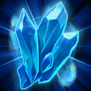
Common
Probius
Mineral Magnet
Increases the collection range of Minerals by 5.
Pacifism
◆Quest: Win a game without any personal Hero Takedowns and Assists.
Reward: Gain 1 Uncommon Boon, 1 Rare Boon, and 1 Epic Boon.

Common
Path of the Assassin
Increases Attack Damage by 4 (+2.0 per stack) per level.

Common
Path of the Warrior
Increases maximum Health by 40 (+40 per stack) per level.

Common
Path of the Wizard
Increases maximum Mana by 10 (+10 per stack) and Mana Regeneration by 0.2 (+0.2 per stack) per second per level.
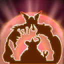
Common
The Lost Vikings
Power of Three
Increases Olaf's maximum Health by 7.5% (+7.5% per stack).
Increases Baleog's Attack Damage and Attack Speed by 5% (+5% per stack).
Increases Erik's Attack Damage by 7 (+7 per stack) and Movement Speed by 5% (+5% per stack).

Common
Powerful
Increases Attack Damage of ALL allies by 5% (+5% per stack).
Common
Nazeebo
Powerful Spiders
Increases Corpse Spiders's damage by 20% (+20% per stack).
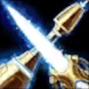
Common
Probius
Protoss Weapons
Increases damage dealt of Zealots, Stalkers, and Immortals by 20% (+20% per stack).

Common
Reinforced Walls
Increases maximum Health of allied Structures by 20% (+20% per stack).

Common
Ring of Magic
You and allied Heroes recharge Ability cooldowns 15% (+7.5% per stack) faster.

Common
Ring of Regeneration
You and allied Heroes regenerate 12 (+8 per stack) Health per second and have 250 (+100 per stack) increased maximum Health.
Common
Nazeebo
Ritual of Boons
◆Quest: Gain 250 stacks of Voodoo Ritual. Progress is lost between rounds.
Reward: Gain 1 Uncommon Boon and 1 Rare Boon.
Spellcasting
Increases Spell Power of ALL allies by 5% (+5% per stack).
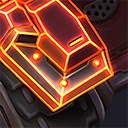
Uncommon
Sgt. Hammer
Advanced Plating
Increases Neosteel Plating's duration by 2 seconds.

Uncommon
Amplified Healing
Increases regeneration effects and all healing received by 25% (+15% per stack).
Backup Power
Increases Photon Cannon's duration by 5 (+5s per stack) seconds.
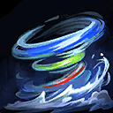
Uncommon
The Lost Vikings
Big Spin
Increases Spin to Win's range by 50% (+50% per stack).
Uncommon
Tyrande
Big Star
Increases Lunar Flare's radius by 20%.
Uncommon
Probius
Black Hole
Increases Warp Rift's cast range and radius by 10% (+10% per stack).

Uncommon
Bye Bye!
Reduces Hearthstone cast time of ALL allies by 75%.

Uncommon
Convenient Portals
Creates a permanent Portal between the top lane and the bottom lane, only usable by your Team.

Uncommon
Demolitionist
Increases damage dealt to Structures of ALL allied Heroes by 25% (+25% per stack).
Drilling Claws
Reduces Spider Mines's arming time by 50%.
Enhanced Targeting
Increases Attack Range of Photon Cannons by 2 (+2 per stack).

Uncommon
Illidan
Extended Assault
Increases Sweeping Strike's Basic Attack damage bonus duration by 3 seconds.
Uncommon
Li-Ming
Farshot
Increases Magic Missiles's range by 15% (+15% per stack).
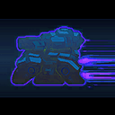
Uncommon
Sgt. Hammer
Fuel Reserves
Increases Thrusters's duration by 4 seconds.

Uncommon
Gathering Power
Increases Spell Power by 15% (+15% per stack).
Uncommon
Nazeebo
Hardy Bones
Increases maximum Health of Zombies by 30% (+30% per stack).
Healthy Frostwolf
Increases Frostwolf Resilience's healing by 25% (+25% per stack).

Uncommon
Muradin
Heavy Hammer
Increases Storm Bolt's Stun duration by 0.25 seconds.
Uncommon
Nazeebo
Jar of Frogs
Increases maximum charges of Plague of Toads by 2.

Uncommon
The Lost Vikings
Let's Go!
Increases Go Go Go!'s duration by 3 (+3s per stack).
Long Pulse
Increases Disruption Pulse's range by 15% (+15% per stack).
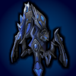
Uncommon
Probius
Long Range Disruptors
Increases Attack Range of Stalkers by 1.5.
Uncommon
Nazeebo
Many Zombies
Reduces Zombie Wall's cooldown by 4 seconds.

Uncommon
Minion Killer
Increases damage dealt to Minions, Mercenaries, Monsters, and Summons of ALL allied Heroes by 25% (+25% per stack).

Uncommon
Nexus Frenzy
Increases Attack Speed by 15% (+7% per stack).

Uncommon
Nexus Range
Increases Attack Range by 1.1 (+0.5 per stack).
Uncommon
Nazeebo
Nimble Legs
Increases Movement Speed of Corpse Spiders by 25%.
Optimized Ordnance
Increases Attack Speed of Photon Cannons by 25%.

Uncommon
Thrall
Pinned Down
Increases Feral Spirit's Root duration by 0.25 seconds.

Uncommon
Quick Mount
Increases the Movement Speed bonus of Summon Mount of ALL allies by 40%.
Rapid Disruptors
Increases Attack Speed of Stalkers by 25%.
Repair Mines
Spider Mines heal you for 75% of the damage dealt.

Uncommon
Searing Attacks
Increases Attack Damage by 20% (+15% per stack).
Uncommon
Nazeebo
Spider Swarm
Corpse Spiders summons 1 (+1 per stack) additional spider.
Uncommon
Tyrande
Stunning Light
Increases Lunar Flare's Stun duration by 0.25 seconds.

Uncommon
Superiority
Grants 15 (+15 per stack) Armor against non-Heroic enemies to ALL allied Heroes.
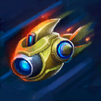
Uncommon
Probius
Turbo
Gain Turbo Charged.
Increases Worker Rush's Movement Speed by 10% (+10% per stack) and duration by 1 (+1s per stack) seconds.
Uncommon
Tyrande
TyrandeOwling
Reduces Sentinel's cooldown by 3 (+3s per stack) seconds.
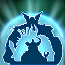
Uncommon
The Lost Vikings
Viking Barrier
Norse Force grants a Shield equal to 10% to 30% of the Viking's maximum Health, increasing in strength for each Viking alive.
Increases Norse Force's duration by 2 seconds.
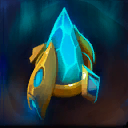
Uncommon
Probius
Warp Conduit
Reduces Warp in Pylon's cooldown by 4 (+4s per stack) seconds.
Wide Pulse
Increases Disruption Pulse's width by 50%.
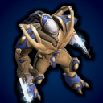
Uncommon
Probius
Zealot Armor
Zealots gain 35 Physical Armor.
Auto MULE
Automatically drop down a MULE near a damaged allied Structure that repairs 10% of the Structure's maximum Health per second.
This effect has a cooldown of 40 seconds.
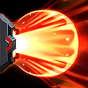
Rare
Sgt. Hammer
Blaster
Increases Concussive Blast's maximum charges by 1 and its damage by 50%.

Rare
Thrall
Breeze
Reduces Windfury's cooldown by 3 seconds and its Mana cost by 20.

Rare
Bribery
Automatically bribe a neutral Mercenary camp to your side every 300 (-60s per stack) seconds. Camps taken this way respawn 50% faster. Does not work on Bosses.

Rare
BUDDY
A friendly Drone follows you around, healing you for 154 Health every 3 (-0.25s per stack) seconds.
BUDDY shoots a missile every 4 (-1s per stack) seconds at the nearest enemy, dealing 142 damage in the area.
Cerberus Mine
Increases Spider Mines's trigger and explosion range by 50%.

Rare
Thrall
Crushing Sunder
Gain Worldbreaker.
Increases Sundering's Stun duration by 1.5 seconds.
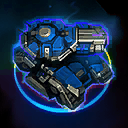
Rare
Sgt. Hammer
Debilitating Rounds
While in Tank Mode, Basic Attacks Slow by 1% for 4 seconds, up to 50%.

Rare
Thrall
Earth Shatterer
Earthquake gains unlimited range.
Reduces Earthquake's cooldown by 50 seconds.

Rare
Illidan
Efficient Morph
Increases Metamorphosis's maximum Health bonus by 100% and reduces its cooldown by 40 seconds.

Rare
Muradin
Fast Puncher
Haymaker gains 1 additional charge.
Reduces Haymaker's cooldown by 20 seconds.

Rare
First Aid
Increases maximum Health by 15% (+15% per stack) and regenerate 1% (+1% per stack) of your maximum Health per second.
Giant Killer
Basic Attacks against enemy Heroes deal bonus damage equal to 2% (+1% per stack) of the Hero's maximum Health.

Rare
Globe Huffer
Spawns a Regeneration Globe near a random allied Hero every 12 (-4s per stack) seconds, with you twice as likely to be chosen.
Passive: Allied Regeneration Globes take 100% longer to turn Neutral.

Rare
Illidan
Hard Impact
Dive Stuns enemies for 0.25 seconds.
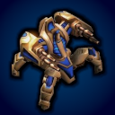
Rare
Probius
Hardened Shield
While the Immortal has Shields remaining, incoming damage that would deal more than 45 damage have the damage reduced to 45. Does not affect Spell Damage.
Rare
Nazeebo
Hex All
Hexed Crawlers triggers on all targets.

Rare
Li-Ming
Improved Archon
Reduces Disintegrate's cooldown to 0.5 seconds and its Mana cost to 5.
Khaydarin Upgrade
Photon Cannons deal 100% of their damage as splash damage around the target.
Rare
Nazeebo
Lasting Poison
Ring of Poison lasts 2 seconds longer.
Light Tank
While in Tank Mode, gain 1.5 Attack Range and 20% Movement Speed.
Movement Speed cannot be reduced below 120% in Tank Mode.

Rare
Mercenary Lord
Friendly non-Boss Mercenaries near you deal 50% (+50% per stack) more damage.
Operational Efficiency
Reduces Mana costs by 50%.
Passive Income
Passively gain 1 (+1 per stack) Mineral every 8 seconds.
Precision Lava Strike
Gain Advanced Lava Strike and Napalm Strike gains unlimited range.

Rare
Promote
Allied Minions have 15% (+15% per stack) increased maximum Health and deal 50% (+25% per stack) increased damage to non-Heroic enemies.
Allied Minions take 25% reduced damage from non-Heroic enemies
Pylon Expansion
Increases maximum amount of Pylons by 1 (+1 per stack).

Rare
Thrall
Quick Lightning
Reduces Chain Lightning's cooldown by 2 seconds.

Rare
Nazeebo
Quick Scare
Increases Ravenous Spirit's duration by 2 seconds and Movement Speed by 15%.
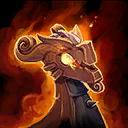
Rare
The Lost Vikings
Ragnarok's Raid
Gain Ragnarok 'n' Roll.
Reduces Mortar's cooldown by 2 seconds.
Rapid Fire
Reduces the time it takes for Photon Cannons to reach 40% Attack Speed from 4 seconds to 1 second.

Rare
Regenerative Core
Your Core regenerates 2% of maximum Health per second while its Shield is active.
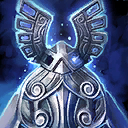
Rare
The Lost Vikings
Replay
Reduces Play Again!'s cooldown by 50 seconds.
Shredder Rounds
While in Tank Mode, Basic Attacks reduce Physical Armor by 1 for 4 seconds, stacking up to 50.
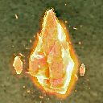
Rare
Probius
Solarite Powered
Regenerate 25 Mana per second while outside a Pylon's Power Field.
Increases maximum Mana by 400.

Rare
Tyrande
Star Rain
Starfall gains unlimited range.
Reduces Starfall's cooldown by 40.

Rare
Illidan
Surprise Hunt
Increases The Hunt's Stun duration by 1 second and reduces its cooldown by 30 seconds.

Rare
Nazeebo
Tantrum
Reduces Gargantuan's Stomp's cooldown by 3 seconds and increases the stomp damage by 25%.
Trojan Mines
While in Tank Mode, every 8th Basic Attack against the same enemy summons a Spider Mine.

Rare
Tyrande
TyrandeShadowstalker
Shadowstalk grants Unrevealable for 4 seconds.
Reduces Shadowstalk's cooldown by 45.
Rare
Muradin
Very Heavy Impact
Dwarf Toss Stuns enemies for 0.75 seconds.

Rare
Li-Ming
Wave of Doom
Gain Repulsion.
Wave of Force reduces the Spell Armor of enemy Heroes by 50 for 0.5 seconds.

Epic
Li-Ming
Arcane Loop
Using a Basic Ability reduces the cooldown of your other Basic Abilities by 0.5 seconds.

Epic
Belligerent Gladiator
Increases the Unstoppable duration of Gladiator's Medallion by 2 seconds.

Epic
Blessing of the Dragons
AI teammates gain 500 (+500 per stack) maximum Health and 20% (+20% per stack) Movement Speed, and Basic Abilities recharge 35% (+35% per stack) faster.
Epic
Probius
Condenser
Increases Warp Rift's maximum charges by 1 and reduces its cooldown by 1 second.
Epic
Tyrande
Deadly Mark
Increases Hunter's Mark's Armor reduction by 10.
Epic
Deep Pockets
Bribery will work on Bosses, Sentinels, and Support camps, prioritizing them over regular Camps.
Passive: Bribery's cooldown recharges 50% faster.
Epic
Muradin
Dual Hammer
Increases Storm Bolt's maximum charges by 1.
Efficient Warp
Reduces the Mineral cost of Zealots, Stalkers, and Immortals by 20% and the cooldowns by 50%.

Epic
Thrall
Electric Shock
Chain Lightning Stuns enemies hit for 0.25 seconds.
Epic
Tyrande
Elune's Grace
Increases maximum charges of Light of Elune by 1.

Epic
Emergency Measure
On fatal damage, AI teammates gain a Shield equal to 50% of Maximum Health for 4 seconds.
This effect has a 60 second cooldown per Hero.

Epic
Experienced
Increases experience gain of ALL allies by 15%.
Extra Mines
Spider Mines creates 2 additional mines.
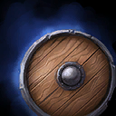
Epic
The Lost Vikings
Fiery Olaf
Gain Hunka' Burning Olaf.
Reduces Hunka' Burning Olaf's damage cooldown by 0.5 seconds.
Epic
Tyrande
Flyby Attack
Sentinel pierces and deals 50% damage to non-Heroic enemies.
Epic
Gladiator's Medallion
Cooldown: 60 seconds (-20s per stack)
Activate to become Unstoppable for 2 seconds.
Epic
Nazeebo
Growing Colony
Arachnophile summons 2 additional spiders.

Epic
Sgt. Hammer
Hover Tank
Gain Hover Siege Mode and increases its Movement Speed to 75%.
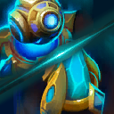
Epic
Probius
Khalai Ingenuity
Warp in Pylon and Photon Cannon gain unlimited cast range and warp in instantly.

Epic
Loot Box
Gain 2 random Common Boons with a chance for higher rarity Boons.
Mechanical Expert
Gain Mechanical Know-how.
Increases Mechanical Know-how's Shield duration by 2 seconds and damage bonus duration by 5 seconds.
Epic
Li-Ming
Need More Mana!
Takedowns restore Mana equal to 30% of Li-Ming's maximum Mana.
Nimble
You have a 10% chance to take no damage from enemy Heroes, increased to 30% against enemy Structures.

Epic
Physical Armor
Gain permanent 15 (+10 per stack) Physical Armor.

Epic
Physical Leech
Basic Attacks heal for 10% (+10% per stack) of the damage dealt.
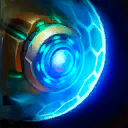
Epic
Probius
Plasma Shields
Gain Shield Capacitor, increases the Shield amount to 50% of maximum Health, and also apply it to Photon Cannons and Pylons.

Epic
Resurgence of the Storm
Upon dying, revive back at your Altar after 5 seconds. This effect has a 300 (-60s per stack) second cooldown.
Rubber Bullets
While in Tank Mode, every 8th Basic Attack against the same enemy Stuns them for 0.25 seconds.

Epic
Spell Armor
Gain permanent 15 (+10 per stack) Spell Armor.

Epic
Spell Leech
Abilities heal for 10% (+10% per stack) of the damage dealt.
Storm Armor
Bathe yourself in electrical energy, shocking a random nearby enemy every second for 147 damage, prioritizing enemy Heroes.

Epic
Storm Shield
Gain a Shield equal to 25% (+25% per stack) of your maximum Health. Shields regenerate quickly as long as you haven't taken damage recently.
Strength
Increases damage dealt by 25% (+25% per stack).
Epic
Muradin
Thundering Smash
Thunder Clap gains 1 additional charges and reduces its cooldown and Mana cost by 40%.
Epic
Nazeebo
Touch of Power
Every 3rd Basic Attack against the same enemy Hero grants 2 stacks of Voodoo Ritual.
Epic
Illidan
Unchained
Gain Blades of Azzinoth.
Increases Sweeping Strike's maximum charges by 1.
Epic
Nazeebo
Undead Army
Dead Rush uproots 4 additional Zombies.
Epic
Illidan
Unstoppable Dive
Dive grants Unstoppable for the duration.
ZAP!
Basic Attacks against Heroes deal 1000% increased damage and Slow by 90% for 4 seconds.
Has a cooldown of 12 seconds per Hero.
Ancient Blessings
Basic Attacks deal an additional 62 damage in an area and heal for 90 for each Hero hit.
This effect can only occur once per second.

Legendary
Army of BUDDYs
Gain 1 (+1 per stack) additional BUDDY and AI teammates gain 1 BUDDY each.
All BUDDYs have 75% damage and healing.

Legendary
Bloodlust
Increases Attack Speed by 20% (+20% per stack) and Movement Speed by 17.5% (+17.5% per stack).
Basic Attacks heal for 15% (+15% per stack) of the damage dealt.

Legendary
Thrall
Critical Healing
Frostwolf Resilience has a 50% chance to grant 1 additional stack.
Legendary
Critical Mass
Getting a Takedown will refresh the cooldown on all of your Abilities.
Legendary
Li-Ming
Critical Power
Gain Tal Rasha's Elements.
◆Repeatable Quest: Takedowns increase Spell Power by 1.5%.
Retain 50% of Quest progress after winning the game.
Experience Hoarder
Carry over 20% of your Experience after winning the game.
Explosive Shells
While in Tank Mode, Basic Attacks splash for 100% damage in an area around the target.
Legendary
Nazeebo
Great Ritual
Gain Vile Infection.
Increases Voodoo Ritual stacks gained by 100%.

Legendary
Illidan
Legally Blind
Gain immunity to Blind and your vision range cannot be reduced.
Legendary
Nazeebo
Lightning Ritual
Each Voodoo Ritual stack increases Attack Speed by 0.3%.
Attack Speed bonus: [dynamic]%
Legendary
Tyrande
Lunar Shower
Lunar Flare triggers a second time 1.75 seconds later.
Legendary
Nazeebo
Master Webweaver
Zombies and Toads summon a Corpse Spider on death.
Passive: Increases Corpse Spiders's duration by 3 seconds.

Legendary
Nano Boost
Increases Spell Power by 15% (+15% per stack) and recharge Basic Abilities 75% (+75% per stack) faster.
Regenerate 2 (+2 per stack) Mana per second.
Legendary
Nazeebo
Never Ending Swarm
Zombie Handler always summons a Zombie and has a 50% chance to summon an additional Zombie.
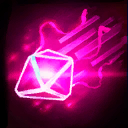
Legendary
Probius
Pulsar
Gain Echo Pulse, Particle Accelerator, and Shoot 'Em Up.
Reduces Echo Pulse's delay by 0.75 seconds.
Particle Accelerator triggers on every Warp Rift.
Increases Shoot 'Em Up's maximum Health damage by 1.5%.

Legendary
Muradin
RAGE!
Gain Bronzebeard Rage.
Increases Bronzebeard Rage's radius by 200% and reduces its damage cooldown by 0.5 seconds.
Rapid Actuators
Gain Ultra Capacitors.
Reduces Siege Mode's cooldown to 0.25 seconds. Enter Siege Mode and Tank Mode near instantly.
Second Wind
On fatal damage, become Unkillable for 4 seconds.
This effect has a cooldown of 300 seconds.
Shared Power
AI teammates's stats scale with the difficulty.
Current stats scaling: 4%

Legendary
Slivan
Summons Slivan the Eternal Mother on your Team at the start of every game.
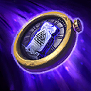
Legendary
The Lost Vikings
The Trilogy!
Gain The Sequel!.
Increases The Sequel!'s death timer reduction to 80%.
Legendary
Nazeebo
Toad Master
Gain Pandemic, Toads of Hugeness, and Guardian Toads.
Pandemic's first Quest reward provides 2 additional toads.
Increases Toad of Hugeness's maximum damage by 100%.
Increases Guardian Toads's Armor by 10.

Milestone
A New Beginning
Gain 1 more Starter Boon.
More Options
Grants a 4th option when selecting a boon or a curse.
Rare Booster
Quadruples the chance to roll Rare Boons, Epic Boons, and Legendary Boons.
Also affects the chance to upgrade rarity on rerolls and bans.
No boons matched the current filter.